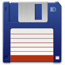

Добро пожаловать на сайт моего курсового проекта
Здесь я помогу вам найти информацию о различных программах по трём направлениям. Надеюсь, данная информация окажется полезной для вас и помогут вам определиться, с какими программами лучше работать.
| Файл-менеджеры | Средства работы с реестром | Архивация данных и работа с архивами |
|  |  |
|
 Work with Registry Work with Registry |
||
 |
Universal Extractor |
Выбор операционной системы
По сей день выбор операционной системы в основном склоняется к трём лучшим представителям: Windows, Linux, IOS.
Но я хочу рассказать про не новую, но зато проверенную и надежную операционную систему Windows 7, точнее Windows 7 Ultimate, каким я верно пользуюсь и в котором я тестировал вышеперечисленные утилиты.
Windows 7 пользовательская операционная система семейства Windows NT. Операционная система поступила в продажу 22 октября 2009 года.
Windows 7 имеет шесть редакций:
- Windows 7 Начальная (Starter, обычно предустановлена на нетбуках)
- Домашняя базовая (Home Basic)
- Домашняя расширенная (Home Premium)
- Профессиональная (Professional)
- Корпоративная (Enterprise, для продажи крупным корпоративным клиентам)
- Максимальная (Ultimate)
Рассмотрим немного подробнее систему Windows 7 Ultimate. Это наиболее универсальный и производительный выпуск Windows 7. Он сочетает в себе исключительное удобство использования с развлекательными функциями выпуска «Домашняя расширенная», а также компонентами для ведения бизнеса выпуска «Профессиональная», включая возможность запуска многих рабочих программ для Windows XP в режиме Windows XP. Функции шифрования диска BitLocker и BitLocker To Go позволяют зашифровать данные и повысить уровень защиты. А поддержка 35 языков обеспечивает дополнительную гибкость. Вы получаете все функции других выпусков Windows 7, а также дополнительные возможности.
Системные требования Windows 7 в наше время не такие уж значительные, смело могу сказать, что любой современный компьютер будет в состоянии позволить ее себе:
Процессор — 32-разрядный (x86) или же 64-разрядный (x64) процессор работающий на тактовой частоте от 1 ГГц и выше;
Оперативная память — 1 ГБ оперативной памяти для установки 32-разрядной ОС или же 2 ГБ оперативной памяти для установки 64-разрядной операционной системы Windows 7;
Свободное место на диске — Для установки Windows 7 требуется 16 ГБ для 32-разрядной операционной системы и соответственно 20 ГБ для установки 64-разрядной операционной системы Windows 7.
Видеокарта - Используемая видеокарта для установки Windows 7 не имеет большого значения, желательно что бы она имела хотя бы 128 МБ памяти. Единственная особенность на которую может повлиять видеокарта — это тема для рабочего стола Aero. Для ее активации необходимо иметь видеокарту,которая поддерживает мультимедийные библиотеки от Diretix 9 и драйвером WDDM начиная от 1.0.
Подробнее про системные требования и особенности редакций можете просмотреть на статье Википедии
Выбор файловой системы
Файловая система – это способ организации данных на носителях информации. Файловая система определяет, где и каким образом на носителе будут записаны файлы, и предоставляет операционной системе доступ к этим файлам.
В широком смысле понятие "файловая система" включает:- совокупность всех файлов на диске;
- наборы структур данных, используемых для управления файлами, такие, например, как каталоги файлов, дескрипторы файлов, таблицы распределения свободного и занятого пространства на диске,
- комплекс системных программных средств, реализующих управление файлами, в частности: создание, уничтожение, чтение, запись, именование, поиск и другие операции над файлами.
С точки зрения ОС, жесткий диск – это набор кластеров.
Кластер – это область диска определенного размера для хранения данных. Минимальный размер кластера – 512 байт.
Поскольку используется двоичная система счисления, то размеры кластеров кратны степени двойки.
Для жестких дисков в ПК в данный момент наиболее распространены две файловые системы: FAT или NTFS. Сначала появилась FAT (FAT16), затем FAT32, а потом NTFS.
Cистема FAT32 - использует 32-разрядную адресацию кластеров и появилась вместе с Windows 95 OSR2 в августе 1996 года. FAT32 ограничена в размере тома в 128Гб. Также эта система может поддерживать длинные имена файлов.
Совместимость FAT32
Устройства с файловой системой FAT32 являются наиболее универсальными и совместимы со всеми версиями операционных систем Windows, Mac OS, Linux, любыми игровыми консолями и в общем практически всем, что имеет USB порт.
Ограничения FAT32
Основным минусом этой файловой системы являются ограничения на размер файла и тома - максимальный размер файла не может превышать 4 GB, а максимальный размер раздела ограничен 8 TB.
Применение FAT32
Основной сферой использования этой файловой системы являются внешние накопители данных, на которых не предполагается хранение файлов большого размера и которым требуется максимальная совместимость с как можно большим количеством разнообразных устройств.
Система NTFS (аббревиатура New Technology File System — Файловая Система Новой Технологии) — стандартная файловая система для семейства операционных систем Microsoft Windows NT.
Основные особенности NTFS: встроенные возможности разграничивать доступ к данным для различных пользователей и групп пользователей, а также назначать квоты (ограничения на максимальный объём дискового пространства, занимаемый теми или иными пользователями), использование системы журналирования для повышения надёжности файловой системы. Спецификации файловой системы являются закрытыми. Обычно размер кластера равен 4Кб. На практике не рекомендуют создавать тома более 2ТБ. Жесткие диски только достигли таких размеров, возможно в будущем нас ждет новая файловая система.
Совместимость NTFS
Эта файловая система отлично работает со всеми последними версиями операционной системы Windows начиная с XP, имеет ограничения на запись в Mac OS и Linux, и не работает с большинством других устройств, за исключением разве что Xbox One.
Ограничения NTFS
Ограничения на размер фалов или разделов в NTFS еще долго не должны упереться в рамки, так что можно сказать, что на данный момент их нет.
Применение NTFS
Использование этой файловой системы разумно только на жестких дисках и SSD, на которых установлена операционная система Windows, так как только лишь с ней этот формат раскрывает все свои преимущества.
Обоснование разметки жесткого диска на разделы
Для того, чтобы разбить жесткий диск на разделы сначала следует понять что такое раздел.
Раздел — часть долговременной памяти жёсткого диска, выделенная для удобства работы, и состоящая из смежных блоков. Выделение разделов обычно практикуется на внутренних загрузочных дисках компьютера,
т.к. основной его целью является отделение файлов операционной системы от файлов пользователя и от файлов других операционных систем, находящихся на том же физическом носителе.
Теперь определимся с тем, какие бывают разделы.
Первичный (основной) раздел
Первичный раздел обязательно должен быть на физическом диске. Этот раздел всегда содержит либо одну файловую систему, либо другие логические разделы.
На физическом диске может быть до четырёх первичных разделов. Некоторые старые операционные системы — например, MS-DOS и Windows — могли быть установлены только на первичный раздел.
Расширенный (дополнительный) раздел
Таблица разделов может содержать не более 4 первичных разделов, поэтому были изобретёны расширенный разделы. Логические разделы выстраиваются в цепочку где информация о первом логическом разделе храниться в MBR. В первом секторе логического раздела хранится описание следующего логического раздела.
Теперь, когда мы знаем что такое разделы, и какими они бывают можно разбить жесткий диск. Для фирмы разрабатывающей программное обеспечение будет достаточно двух первичных разделов - первый для операционной системы, а на втором будут хранится программы и файлы пользователей.